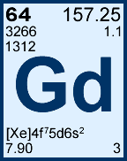
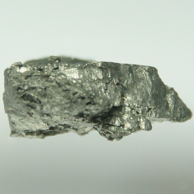

| Nome | Gadolínio |
|---|---|
| Símbolo | Gd |
| Número atômico | 64 |
| Massa atômica | 157,25 u |
| Grupo | Lantanídeos |
| Estado físico | Sólido em temperatura ambiente |
| Aparência | Metal branco-prateado, com brilho metálico |
| Principais propriedades | Possui propriedades magnéticas importantes, reage lentamente com água e apresenta grande capacidade de absorver nêutrons. |
O gadolínio é um metal pertencente ao grupo dos lantanídeos, também conhecidos como terras raras. É relativamente estável em ar seco, mas pode oxidar em contato com o ar úmido. Uma de suas características mais importantes é sua elevada capacidade de capturar nêutrons
O gadolínio foi identificado em 1880 pelo químico suíço Charles Galissard de Marignac, em Genebra. Antes disso, pesquisadores já suspeitavam que algumas substâncias consideradas como um único elemento eram, na verdade, misturas de diferentes elementos. Marignac conseguiu identificar evidências de um novo elemento a partir de materiais derivados de terras raras raras.
Em 1886, o químico francês Paul-Émile Lecoq de Boisbaudran conseguiu isolar o óxido relacionado ao novo elemento e deu a ele o nome de gadolínio, em homenagem ao químico e geólogo finlandês Johan Gadolin. O gadolínio metálico só foi isolado posteriormente, em 1935.
O gadolínio não costuma ser encontrado livre na natureza. Ele ocorre principalmente combinado com outros elementos em minerais que contêm terras raras.
Entre os minerais associados ao gadolínio estão monazita, bastnasita, gadolinita, samarskita e xenotima. A extração comercial pode envolver processos de separação química, como troca iônica e extração por solventes.

Importância: O gadolínio possui grande importância tecnológica e médica. Na medicina, seus compostos são importantes para melhorar determinados exames de ressonância magnética. Na indústria, suas propriedades magnéticas e sua capacidade de absorver nêutrons permitem aplicações em tecnologias avançadas e na área nuclear.
Riscos: O gadolínio livre pode apresentar toxicidade, por isso, na medicina, ele não é administrado simplesmente como metal. Nos agentes de contraste, o gadolínio é ligado a moléculas chamadas quelantes, que ajudam a mantê-lo em uma forma mais estável.
Existe atenção especial para pacientes com problemas graves nos rins, pois a eliminação dos agentes de contraste pode ser prejudicada. Estudos também investigam a permanência de pequenas quantidades de gadolínio no organismo e sua presença no ambiente após o uso médico. Por isso, seu uso médico deve ser realizado com avaliação profissional e seguindo as indicações e precauções adequadas.
O gadolínio é o único elemento da tabela periódica que tem um nome derivado de uma pessoa (Johan Gadolin).
Compostos de gadolínio são usados em aplicações médicas, especialmente em exames de ressonância magnética.
O gadolínio é um elemento essencial para a produção de ímãs permanentes e materiais magnéticos.